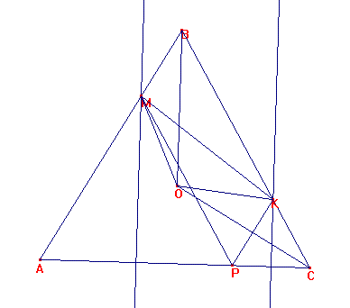
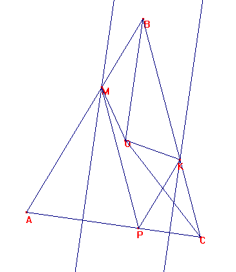
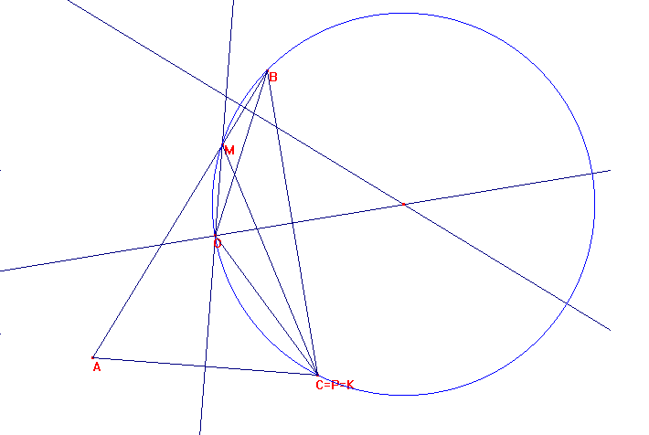

Problema para el aula
Propuesto por William Rodríguez Chamache. profesor de geometria de la "Academia integral class" Trujillo- Perú
Problema 312
Sea ABC un triángulo. Sea O el circuncentro.
Sea P un punto de AC. Tracemos las mediatrices de AP que cortará a AB en M y de PC que cortará a BC en K.
Demostrar que OMBK es un cuadrilátero inscriptible.
Rodríguez, W. (2006): Comunicación personal.
Solución del director
a) Caso del equilátero:

Es MB=PK=PC.
Luego mediante un giro de 120º y centro en O, el triángulo OKC pasa a ser OBM.
Así el ángulo MOK mide 120 y omo < MBK=60, MBKO es inscriptible.
b) Caso del isósceles no equilátero tomando P sobre el lado desigual.

PKBM es paralelogramo.
Por tanto MB=PK=CK.
Si damos un gio al triángulo OCK con giro en centro O y ángulo 2A=2C, se transforma en OBM.
Luego < MOK=2A. Y 2A+B=180, por lo que el cuadrilátero KOMB es inscrptible.
c) Caso del triángulo escaleno.
Consideraremos en este caso sólo el punto P coincidiendo con A o C.

El triángulo AMC es isósceles, por lo qie su ángulo en M mide 180-2A.
Luego es <MOC=<COB= 2A, y cqd, COMB es inscriptible.
Ricardo Barroso Campos
Didáctica de las Matemáticas
Universidad de Sevilla.